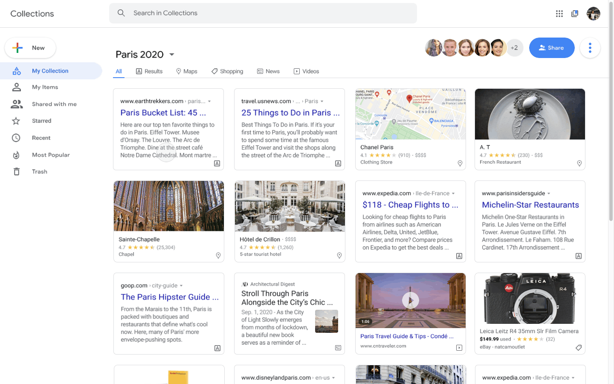

Accessing and saving information can be difficult when there is so much content on the internet. Google Collections is a tool that allows users to easily save search results for later and collaborate acquiring resources to create sets of information. (Shoutout to David Lie-Tjauw, Brian Lin, Moses Ting, and Jessica Ko for their mentorship and help!)
WHO
Created, designed, and animated by me!
WHAT
Case study for fellowship at Design Collective.
WHEN
July 26 to September 14,
2020.
Have you ever looked up something using Google
Search? I'm sure you have; Google is the world's most popular
search engine! Now, has there ever been a time you found too many
results that piqued your interest at once?
Though Google
Search is an efficient tool that holds a lot information, users can feel overwhelmed.
Users may want to access information again at a later time while researching, trip planning, or learning,
but there is just too much to look through.
Enter Google Collections, a feature that allows users to save links for later.
Currently, Collections is available on mobile and desktop,
but on desktop, its entry points are limited. It can be accessed through an obscure
icon in the app kit or by searching "www.google.com/collections." This is a problem as 40% of Google's
traffic comes from desktop searches.
Moreover, Collections does not allow you to bookmark
every kind of search. Images, map results, jobs, and e-commerce items can be saved, but not news, videos, text
results, stock information, and more. Additionally, bookmarks are also hard to find and access.
Collections is also not collaborative. Lastly, the Collections page itself
does not utilize spacing well.
I sought out to fix these issues.
Collections can multiply ad revenue. Take, for example, Ben, who is looking up coding solutions. He saves an advertisement he finds valuable to a Collection of six friends. Now, seven people are clicking on it instead of just one! Collections also affects real-life situations outside of the digital world, too. Ericka is going to have a better trip to Paris if she and her friends can settle places to go in Collections beforehand! Lastly, this product will increase the amount of time that users spend in Google’s ecosystem.
I spoke to 8 individuals about Google Collections, and all 8 of them did not know Collections existed. Additionally, 100% of them stated that they struggled with keeping tabs on information. (They were all students and newly employeed graduates.)
With my new version of Collections, users will be able to easily bookmark any kind of information for later access, decluttering tabs. They will also be able to collaborative synchronously on research, projects, and activities.
My redesign focuses on enhances Google Collection's accessiblity, intuition, and tools for collaboration.
Users can hover over any content to access the blue bookmark for saves whenever and wherever.
They can also access Collections via a notification of their most recent save or the Collections icon in the upper right-hand corner.

When navigating to Collections, users will see their entire library. They can click on a single Collection to see its contents, organize and sift through the contents by filtering and interacting with each item, and navigate to other Collections via a drop-down menu.
Users can copy and paste links for mass editing and viewing.
They can also
directly invite contacts via Gmail to edit and contribute individually.

Users can interact with items in Collections, too. They can hover over to "Star" an item and revisit it later in their "Starred" section, view "Recents," see what others have added under "Shared with me," and even check out which items have the most stars under "Most Popular."
The most difficult part of this case study for me was thinking like Google.
My personal design style is not as focused on accessibility as it is aesthetics sometimes, and Google definitely
emphasizes on simplicity. I studied Material Design and Google's applications intensely so that I could get a
hang of Google's design style and hierarchy of information organization. As such, I ended up scrapping the two
designs below in my final prototype.
I changed the tabs within each Collection to represent further methods of
filtering and organization rather than keeping them as methods to toggle between Collections. Additionally, I decided
to go with each information card taking on a uniform, single shape rather than different sizes like in a masonery view,
mimicking Google Drive.
Next, I would like to explore what this
feature would look like on mobile. (I decided to work on the desktop version
because Collections was less visible there but still had drove 40% of search traffic.)
Additionally, I
would like to explore other entry points for this product, such as implementing
this design for the organization of Bookmarks on the Google Chrome Web Browser.
Lastly,
I loved my experience with Design Collective. The mentors were sweet and gave me lots of insight,
which was incredibly useful as I am a (mostly) self-taught designer. Learning how to use
Principle was fun and useful! I am now equipped to make my designs more interactive
and engaging, and I hope to apply this in my career soon.